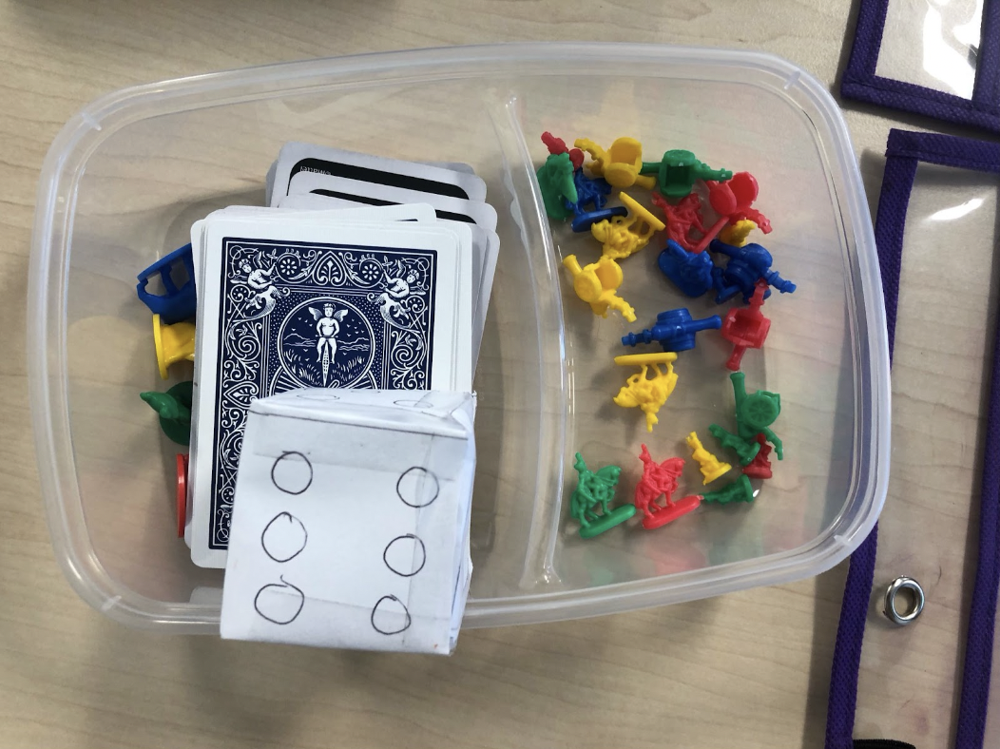
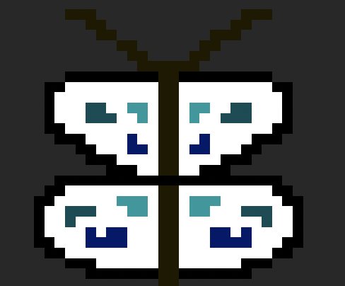
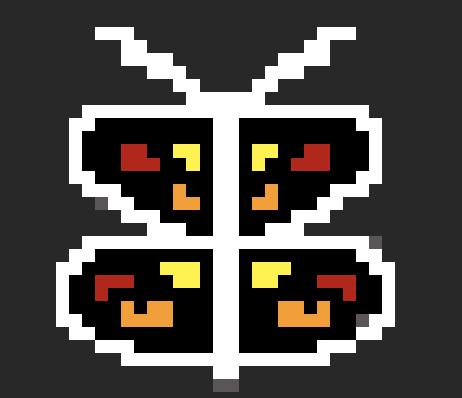
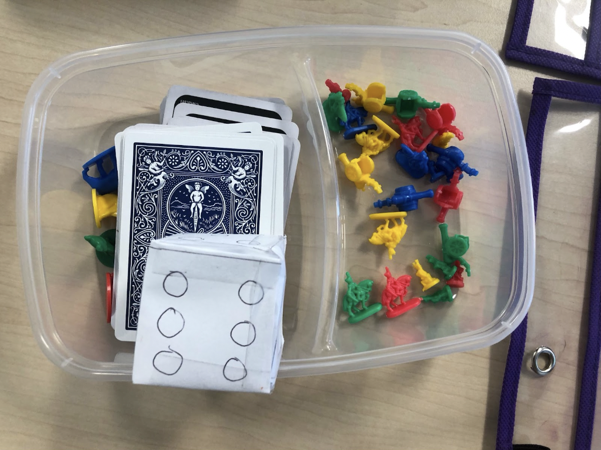
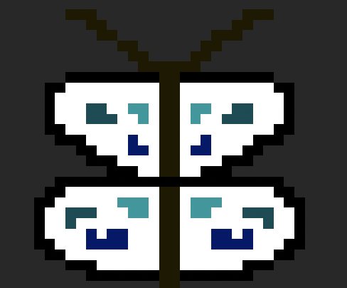
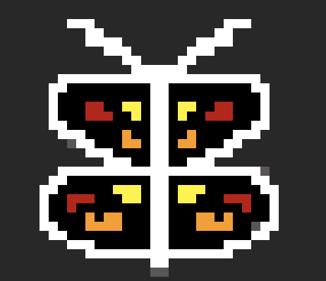

  
During the board game exploration, we learned that it was hard to keep a player interested in the game. Since our game was one of the 'be the last one standing' idea, it could be really hard to keep a player interested. We learned that we needed to think of all the different gamer types to make it more intereactive. However, the ideas behind how a person can play was very interesting as we tried to figure out what could suit each person's individuality.
The video game exploration applied to our knowledge of the technology. We created a character that could be adaptable to other people's interests and then created a game with different coding that could be used to entertain. My coding for the game goes as follows:
def draw():
screen.fill("light gray")
screen.draw.filled_rect(main_box, "medium aquamarine")
screen.draw.filled_rect(timer_box, "medium aquamarine")
for box in answer_boxes:
screen.draw.filled_rect(box, "misty rose")
screen.draw.textbox(str(time_left), timer_box, color = ("black"))
screen.draw.textbox(question[0], main_box, color=("black"))
index = 1
for box in answer_boxes:
screen.draw.textbox(question[index], box, color=("black"))
index = index + 1
def game_over():
global question, time_left
message = "Game over. You got %s questions correct!" % str(score)
question = [message, "-", "-", "-", "-", 5]
time_left = 0
def correct_answer():
global question, score, time_left
score = score + 1
if questions:
question = questions.pop(0)
time_left = 10
else:
print ("End of questions")
game_over()
def on_mouse_down(pos):
index = 1
for box in answer_boxes:
if box.collidepoint(pos):
print("Clicked on answer " + str(index))
if index == question[5]:
print("You got it correct")
correct_answer()
else:
game_over()
index = index + 1
def update_time_left():
global time_left
if time_left:
time_left = time_left - 1
else:
game_over()
clock.schedule_interval(update_time_left, 1.0)
def on_key_up(key):
global score
if key == keys.H:
print("The correct answer is box number %s " % question[5])
if key == keys.SPACE:
score = score - 1
correct_answer()


